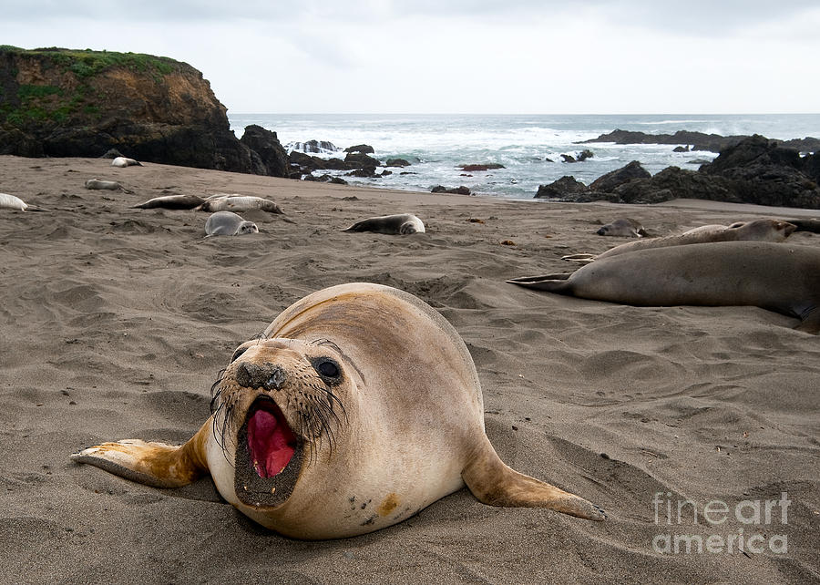
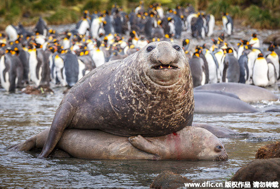

北象鼻海豹

型態特徵
成年或幼生的北象鼻海豹都是無毛的，脫皮前呈黑色。脫皮後一般都呈銀色至深灰色漸變成黃褐色。成年雄性的頸部無毛，胸部有粉紅色、白色及淺褐色的斑點。
黑色的眼睛大又圓。眼睛的闊度顯示牠們主要是以視覺來獵食。每一隻腳都有五隻有蹼的腳趾。這對靈活的腳可以用來推水。
北象鼻海豹會用鰭來支撐及推動身體。牠們能夠在短距離內走得很快，速度達至每小時8公里。
雄象鼻海豹平均長4米，而雌象鼻海豹則長3米。
行為
北象鼻海豹會吃超過30種的魚類及頭足類，包括魷魚、八爪魚、鼠鯊及細小的鯊魚。
們可以潛入深至300-800米的水底，雄性最深可以潛達1500米。
北象鼻海豹在夏天會進行一次脫皮，時間達1個月之久，期間會脫去大部份的毛皮及皮膚。牠們會在海灘上保持體溫，直至新的毛皮長成。
繁殖
北象鼻海豹於12月及1月會回到陸上的棲息地交配，雄性會先到達，並且之間會進行打鬥，以確定牠們領主的身份。牠們並不會打死對方，但仍會打至遍體鱗傷。
雌性到達後，會選擇自己的配偶。牠們是一夫多妻制的，一頭雄性一般會與30-100頭雌性交配。
一隻成功的雄性一生中可以與超過500頭雌性交配，但大部份雄性卻從未交配。
幼北象鼻海豹約需4星期來哺養，之後會突然斷奶，兩個月後就可以出海。


See More(wikipedia) >>